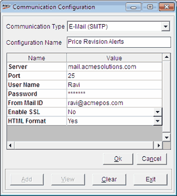

The Communication Configuration window is as shown.

Communication Type: E-Mail (SMTP) is selected, based on the selection on the previous window.
Configuration Name: Enter the name for the mail configuration.
The grid displays the properties to be set to use mail for communication. The properties are listed under Names and the specified values under Value.
Server: Enter the e-mail server name.
Port: Enter the number of the port to be used for accessing the e-mail server.
User Name: Enter the user name to be used for accessing the e-mail server.
Password: Enter the password to be used for accessing the e-mail server.
From Mail ID: Enter the mail ID to be used as the sender's mail ID.
Enable SSL: Select Yes, if the transmission has to use secure socket layer. Otherwise select No.
HTML Format: Select Yes, if the communication had to use HTML format. Otherwise select No.
Active: Select to make the communication type active.
Test Connection: Click to check the connectivity.
Note: Here you cannot add or view any other communication configuration.